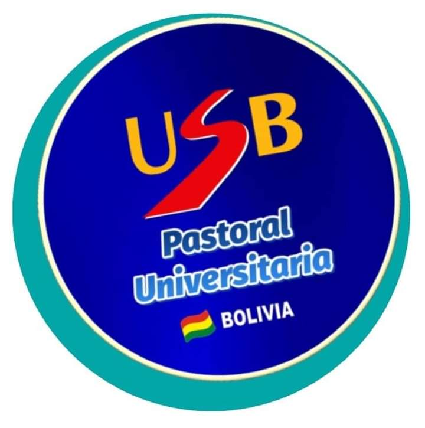

Proporcionar el servicio de Pastoral y Oratorio Universitario a la comunidad universitaria de la
Universidad Salesiana de Bolivia, a través de procesos enmarcados desde el cuadro de referencia
de pastoral juvenil salesiana, que denotan un crecimiento integral en la fe, lo educativo
cultural, el asociacionismo salesiano y la promoción vocacional a nivel institucional.
